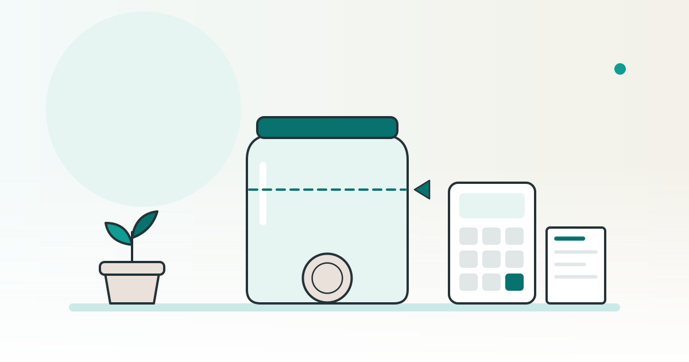

SHOPKIT コラム
少額資金で起業するには最初にかかるお金を抑えて小さく始める順番

手元のお金を大きく減らさずに、小さく起業したいと考えている方へ。始める時の代金を抑えても、毎月の契約や追加の仕入れが重なると、使うお金は増えていきます。支払いを先に決めるものと、試してから増やすものに分けて考えます。
この記事は、完成品のネットショップを販売している SHOPKIT が書いています。
少額資金で起業するなら、最初に払うお金と毎月出ていくお金を分ける
まず、生活に必要なお金と、事業を試すために使えるお金を分けます。そのうえで、候補の仕事にどんな支払いがあるかを書き出します。総額だけで比べず、いつ払うか、契約を続ける間は支払いがあるかも一緒に並べてください。
初期費用は、始める準備のために最初に使うお金です。固定費は、取引がなくても契約などに応じて繰り返し出ていくお金を指します。注文や依頼を受けるたびに増える支払いは別にすると、最初の代金だけを見て選ぶのを避けられます。
| 支払いの分け方 | 考える項目の例 | 先に書くこと |
|---|---|---|
| 始める前に払う | 必要な道具、最初の準備、契約を始める時の支払い | 支払う時期と、提供を始める前に必要な理由 |
| 続ける間に払う | 場所やサービスの継続契約 | 支払いの周期と、解約や更新を判断する時期 |
| 取引に合わせて払う | 材料、商品の仕入れ、届けるための手配 | 何を引き受けた時に、どの支払いが増えるか |
この表は、費用の相場を示すものではなく、候補ごとに支払いを整理するための例です。払う日が先でも、すでに契約で支払いを約束しているなら、その分を予定に入れます。後から請求されるお金を、使っていないお金として数えないようにします。
ネットショップに絞った費用の内訳は、次の記事で扱います。ここでは業種を問わず、支払いを決める順番に絞って考えます。
関連：ネットショップの開業資金はいくら？始め方別の初期費用と毎月のお金
設備・在庫・場所は、最初の提供に必要な分と後から足す分を分ける
必要な準備を整える前に仕事を受けるのではなく、最初に約束する商品や仕事の範囲を小さくします。その範囲を届けるために必要な道具や数量から、支払いを決める考え方です。将来できるようにしたい仕事のための設備まで、同時にそろえる必要があるかを問い直します。
設備なら、最初の提供に使う機能と、仕事が増えてから欲しくなる機能を分けます。在庫なら、扱う種類や仕入れる数量を広げる前に、確かめたい商品を絞ります。場所も、専用の事務所を持つ前に、何の作業にどんな場所が必要なのかを決めてください。
| 増やす前に考えるもの | 最初に決める範囲 | 追加を考える材料 |
|---|---|---|
| 設備 | 最初の提供に必要な機能と、手元で使える物 | 手元の物では対応できない作業が具体的になったか |
| 在庫や材料 | 扱う種類、引き受ける数量、保管できる範囲 | 残った物と、次に求められた物を区別できるか |
| 場所 | 作業、保管、相手への提供に必要な条件 | 場所の不足が、続けるうえで実際の支障になっているか |
自宅で始めたい場合も、その仕事に使える場所かどうかは別に確かめます。仕事の内容によっては、場所や設備について窓口へ相談する必要があります。費用を減らしたいという理由だけで、契約や手続きの確認を省かないようにします。
どの事業の形を選ぶかで迷っている場合は、次の記事を参照してください。候補が決まったら、その仕事を小さい範囲で提供するには何が必要かを、支払いの表へ戻して整理します。
関連：一人でできる事業の選び方｜家で続けられる小さな商いの条件
小さく起業するときは、使う金額と期間の上限を先に書いておく
予算は、最初に購入する物の代金だけでなく、試す間に約束する支払いまで含めて決めます。追加の契約や仕入れをする前に、上限の範囲に収まるかを見直します。生活に必要なお金を次々に足す形にしないためにも、どこで支出を止めるかを先に決めます。
期間の上限は、続けるかどうかを見直す日です。その日に何を確かめるかも書きます。問い合わせがあったかだけでなく、届けるまでの作業を続けられるか、予定外の支払いがどこで生じたかを残しておくと、次の判断につながります。
| 先に決める項目 | 記入する内容 | 見直す時の判断 |
|---|---|---|
| 支出の上限 | 生活費と分けて、試すために使える範囲 | 追加の約束をしても、上限の内側にあるか |
| 試す範囲 | 商品や仕事の内容、受け付ける量 | 広げる前に、最初の範囲を提供できたか |
| 振り返る日 | 次の支払いを決める前に確認する日 | 困った点と相手の反応を記録から説明できるか |
| 止める線 | 追加の契約や仕入れを止める条件 | 続ける理由が、すでに使ったお金だけになっていないか |
すでにお金を使ったことと、次の支払いが必要なことは別です。上限に近づいた時は、続けるために何を変えられるかを確かめます。扱う物や引き受ける量を小さくする、追加の購入を止めるなど、次の支出を決め直す方法もあります。
届出や税の手続きは、始める前に公的な窓口で確かめる
費用を抑える計画と、必要となる手続きの確認は一緒に進めます。何を提供するか、どこで行うか、いつ始める予定かをまとめます。その情報をもとに、仕事に合った窓口へ、必要な手続きと期限を確かめてください。
国税庁の開業に関する手続の案内には、事業所得などが生じる事業を始めた人を対象に、書類の作成や提出の方法が載っています。少ない元手で始めることだけを理由に、届け出の対象かどうかを決めず、仕事内容を伝えて税務署で確認します。
届け出の相談と、税の申告の相談も分けておきます。契約の文面、支払いの控え、売買の記録は後から探せるように保存します。自分にどの手続きが必要かを窓口で確かめ、行う作業を準備の予定へ戻してください。
始めるまでの全体の段取りを整理したい場合は、次の記事で扱います。この記事の支払いの表は、その段取りのどこでお金が必要になるかを書き足して使えます。
国が設けた無料の経営相談で、使い道の順番を見てもらう
支出を減らすために何を残すか決めにくい場合は、候補と支払いの表を持って相談します。安い物を探す前に、そもそも最初から必要な支払いかを、第三者にも説明してみる方法です。相手に見てもらえるよう、事業の内容と確かめたいことを同じ紙にまとめます。
よろず支援拠点の全国本部の案内では、国が設ける経営相談の窓口で、相談に料金がかからないと説明しています。すでに事業を行う人だけでなく、創業を予定している人も対象です。地域の拠点を探す案内があるので、相談の方法や予約を確かめてください。
相談へ持っていくのは、買いたい物の一覧だけではありません。最初に誰へ何を届けたいか、そのために必要と考えた物、まだ支払いを決めていない物を分けます。「どれを後に回せるか」を尋ねる形にすると、使い道の順番を相談できます。
中小企業基盤整備機構の起業支援ページには、事業を考える段階から、お金の準備や開業の手続きまで、調べる項目が整理されています。相談前に自分の準備で抜けている項目を探す入口として使えます。仕事の形が固まっていなければ、その点も相談の材料にします。
相談した後は、見送る支払いと、次に確かめる内容を書き直します。その場で候補を増やすだけでなく、最初の範囲を狭められるかを見ます。最終的に契約する前には、支払いを止める条件と見直す日をもう一度確かめてください。
作る手間を省いて、販売から小さく始める形もある
商品を売る仕事を選ぶなら、自分でお店を作る形と、完成品を購入して始める形があります。自分で準備する部分が違うので、最初に用意する内容を同じ表で並べて比べます。完成品を選ぶことだけで、支出が一律に少なくなるとは決めず、受け取る物と今後必要な支払いを確かめてください。
SHOPKITは、完成品のネットショップを購入できるサービスです。デザイン済みのお店に、仕入れの情報や販売・集客の手順書をそろえてお渡しします。商品とお店の準備を整えた状態から、販売を始める選択肢です。
購入する場合も、自分で作る場合も、先に決めた予算と照らして選びます。お店の準備を省くことと、販売を続けるために必要なお金は分けて考えてください。完成品に含まれる中身は、サービスページのお渡しするもので確認できます。
候補を見る時は、受け取る中身のうち、自分が使う物を具体的にします。お店の一覧を見ながら、準備が必要な部分と、購入する形で省ける部分を整理してみてください。
よくある質問
少額資金で起業したい人は、最初に何への支払いを整理すればよいですか？
始める時の支払い、続ける間の支払い、取引に合わせて増える支払いを分けます。そのうえで、最初の提供に必要な準備と、後から追加できる物を区別してください。
少ない元手で事業を始める人は、必要な設備や在庫も後に回してよいですか？
最初に約束する範囲を届けるための準備は残します。その範囲を広げるための追加の設備や数量を、試した後に考える形です。場所や手続きについても、必要な確認を省かずに進めます。
まだ起業していない人でも、公的な窓口でお金の使い道を相談できますか？
よろず支援拠点の全国本部は、創業を予定する人も相談の対象に挙げています。予定する仕事、使うお金の範囲、支払いの候補を整理し、地域の窓口で相談方法を確かめてください。
SHOPKITのお届けするものについては、2026年10月15日時点のサービスページの記載を参照しています。公的資料は2026年10月30日に確認した内容です。